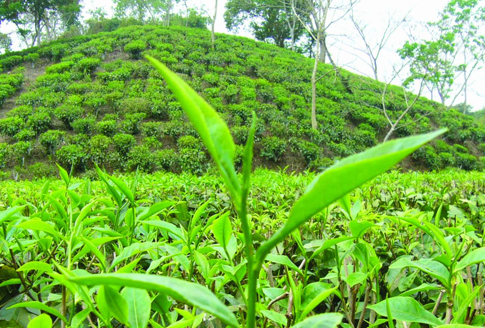
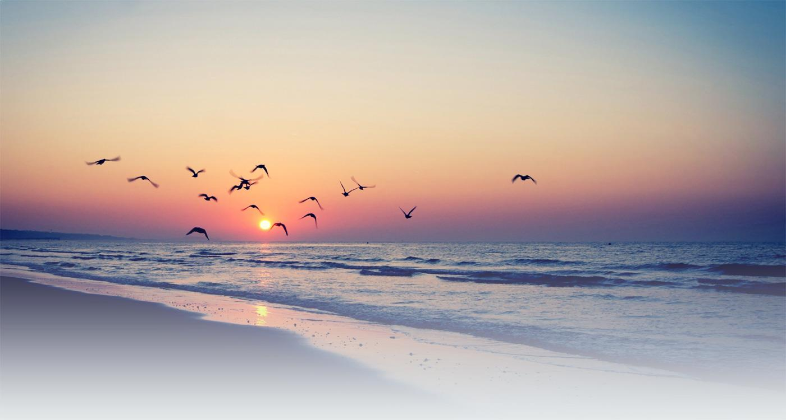
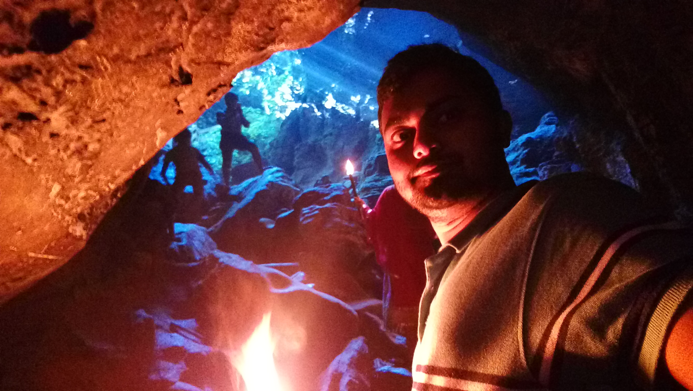
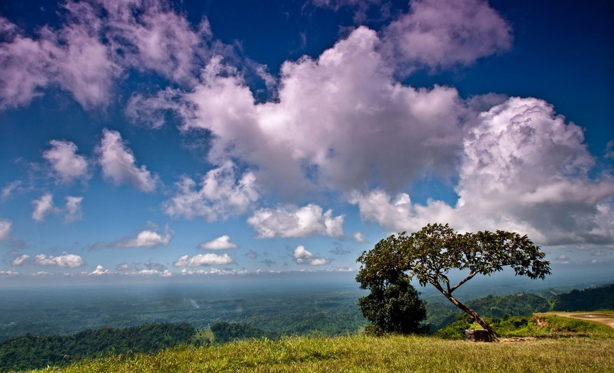
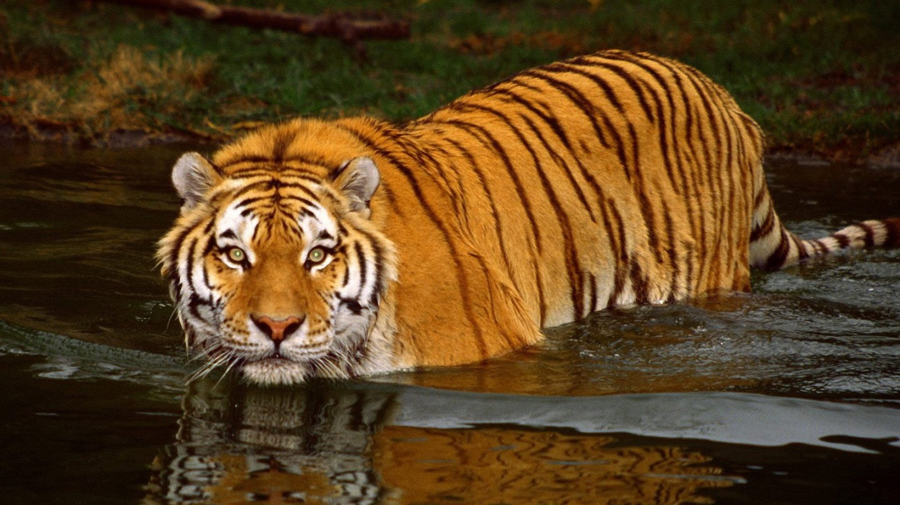

Services
-

Sylhet
Sylhet is a beatiful city with so many sites to see. It is the only place in Bangladesh with so many tea state and waterfalls. Besides that it has so many historical places to vist.Like Shah Jalal majar,Shaj Poran majar.
-

Cox's Bazar
Cox’s Bazar sea beach is very attractive tourist destination of Bangladesh. Cox’s Bazar sea beach is situated between river Bakkali and Bay of Bengal. It is the longest sea beach of the world.
-

Rangamati
Rangamati, a small town located amongst the green hills, lakes and rivers of the Chittagong Hill Tracts. This is what makes it a prime Bangladesh hill destination. It is known as the Lake City of Bangladesh as this place is located on the bank of the beautiful Kaptai Lake.
-

Khagrachori
Khagrachhari is a district in south-eastern Bangladesh. It is a part of the Chittagong Division and the Chittagong Hill Tracts. Its local name is "Chengmi". Khagrachhari is also known as Phalang Htaung or the Mong Circle
-

Bandarban
Bandarban is a place with hills and natural beauty. It is simply beatiful with so many hills and sites to visit.Like Nilagiri,Nilachol,Chimbuk,Tahjindong,Mowdok Mual, and Keokradong.
-

Sajek Valley
Sajek Valley is an emerging tourist spot in Bangladesh situated among the hills of Kasalong range of mountains in Sajek union, Baghaichhari Upazila in Rangamati District. The valley is 2000 feet above sea level.
-

Sundarbans
The Sundarban forest lies in the vast delta on the Bay of Bengal formed by the super confluence of the Ganges, Hooghly, Padma, Brahmaputra and Meghna rivers across southern Bangladesh. The seasonally flooded Sundarbans freshwater swamp forests lie inland from the mangrove forests on the coastal fringe. The forest covers 10,000 square kilometres (3,900 sq mi) of which about 6,000 square kilometres (2,300 sq mi) are in Bangladesh. It became inscribed as a UNESCO world heritage site in 1997. The Indian part of Sundarbans is estimated to be about 4,110 square kilometres (1,590 sq mi), of which about 1,700 square kilometres (660 sq mi) is occupied by waterbodies in the forms of river, canals and creeks of width varying from a few metres to several kilometres.
-

St. Martin
St. Martin's Island (Bengali: সেন্ট মার্টিন্স দ্বীপ) is a small island (area only 8 km2) in the northeastern part of the Bay of Bengal, about 9 km south of the tip of the Cox's Bazar-Teknaf peninsula, and forming the southernmost part of Bangladesh. There is a small adjoining island that is separated at high tide, called Chera Dwip. It is about 8 kilometres (5 miles) west of the northwest coast of Myanmar, at the mouth of the Naf River.